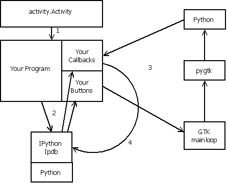

Part of the challenge of debugging it to understand where things come from and figureing out what to pay attention to and what to ignore. Even the simplist program, such as HelloWorld.activity can look pretty complicated when you start debuggin it. That is because so much comes with inheritance from the activity.Activity super class. The following line says that the HelpTemplate class inherits from "activity.Activity" all of the methods, variables defined in the "Activity" class found in the "activity" module :
class HelpTemplate(activity.Activity):
The diagram which follows depicts this inheritance with the arrow labeled "1".
The arrows, labeled "2", refer to the debugging help that IPython and Ipdb give you as your program is difining the "buttons", and "Callback Methods" which permit your Activity to be useful. During this phase, IPython is supervising your program . If there is a run time error, it gives you a traceback of how the program got to the place where the error occurred. If you issue the "trace" command, Ipdb runs your program line by line, asking all the time "is there a breakpoint set for this line?" Because it is asking this question all the time, you will find that "trace" runs much slower that "go".
You set a breakpoint by left clicking on the number column of the line where you want to start looking at variables, or single stepping. (refer to Editor, Setting Breakpoints for details) . You can set as many breakpoints as you want, using the Edit page of PyDebug, before you issue the "trace" command.
After you have started "trace"ing, and are typing commands at the "ipdb>" prompt, a new set of commands becomes available (see a short reminder list of these commands by typing "?" at the "ipdb>" prompt. Click here to read a longer description of the IPDB commands.
You can get a list of breakpoints that you have set, and you can set additional breakpoints by typing <filename>:<line number>. If you want to use the Editor tab, and left click on the number line, you need to "q"uit from "ipdb>" prompt, then go into the Editor to set the breakpoint, and return to the "Activity" page to reissue the "trace" command, which will start the debug session once again.

After the Buttons and Callbacks are defined, the Activity framework calls the "GTK mainloop". At this point the loop labeled "3" takes over. Button press "events" are received by the "GTK mainloop", and then sent to "pygtk", via the regular python interpreter, and eventually wind up causing your Callback methods to be executed. At this point, the line by line examination to see if a breakpoint has been set, (loop 2), is no longer active.
This is where you need to modify your code by setting tracepoints (blue highlights) or shell escapes (green highlights) to watch what your program is doing. These modifications to your code are shown in the diagram as the circular arrow labeled "4". You insert a call to IPdb, and IPython, which permit you to examine variables, single step, and follow the execution of your program until the method returns to the GTK mainloop.
Please refer to the section on Setting Breakpoints for a detailed description of how to set and clear breakpoints. During the phase where you are defining your buttons and callbacks, and when you use the tracepoint (blue hightlight), the "ipdb>" prompt is displayed and the "pdb" command set is active.
An additional couple of commands are defined as shown by the following command line interaction:
synchronize called. file:/home/olpc/.sugar/default/org.laptop.PyDebug/data/pydebug/ playpen/HelpTemplate.activity/helptemplate.py. line:51. Col:0
ipdb> ps
self help = <Help object at 0x9e481e4 (sugar+graphics+window+Window at 0x9f94030)>
self _pservice = <PresenceService object at 0x9b34d4c (sugar+presence+presenceservice+ PresenceService at 0x99805c0)>
self _deleting = False
self _is_fullscreen = False
self _activity_id = 63a9ef8f5d91129fd0cd9605a810efb84d6c5ffe
self _invites_queue = []
self _join_id = None
self _enable_fullscreen_mode = True
self _unfullscreen_button = <UnfullscreenButton object at 0x9e480a4 (GtkWindow at 0x9f94240)>
self canvas = <gtk.Button object at 0x9e4fc0c (GtkButton at 0x9e0ec78)>
self _jobject = None
self _vbox = <gtk.VBox object at 0x9e4807c (GtkVBox at 0x9f45160)>
self _hbox = <gtk.HBox object at 0x9e4802c (GtkHBox at 0x9f451b8)>
When I wanted to print the variables of the Help class I created, the first time, I forgot to include "self." in the print request, and I didn't get the output I expected. A lot of the variables are not yet defined, but I am able to verify that the "HOME" variable is set properly. Later, if I wanted to check the values of these variables in the Help class, I would set a trace call (blue highlight) somewhere in a method that was part of the Help class, and use the "ps" command to view the same variables.
ipdb> pi help
ipdb> pi self.help
self.help _unfullscreen_button = <UnfullscreenButton object at 0x9e481bc (GtkWindow at 0x9f3b710)>
self.help _event_box = <gtk.EventBox object at 0x9e48194 (GtkEventBox at 0x9f94908)>
self.help canvas = <Browser object at 0x9e4820c (hulahop+webview+WebView at 0x9e0c788)>
self.help handle = <sugar.activity.activityhandle.ActivityHandle object at 0x9e44c6c>
self.help help_toolbar = <Toolbar object at 0x9e484b4 (GtkToolbar at 0x9e74348)>
self.help tray = None
self.help _enable_fullscreen_mode = True
self.help help_id = None
self.help _alerts = []
self.help _web_view = <Browser object at 0x9e4820c (hulahop+webview+WebView at 0x9e0c788)>
self.help _is_fullscreen = False
self.help HOME = /home/olpc/.sugar/default/org.laptop.PyDebug/data/pydebug/ playpen/HelpTemplate.activity/help/HelpApi.htm